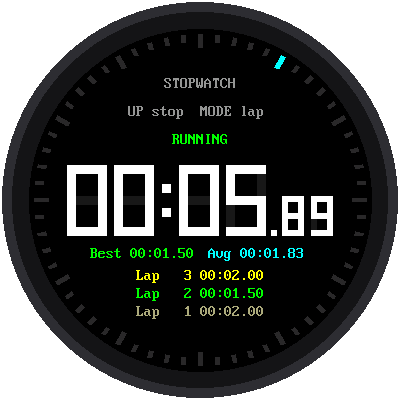

title: Sound, Alarms, and Timers description: Sound and timing features: PWM tones, piezo buzzers, I2S audio, alarms with snooze, stopwatches, countdown timers, and world clocks. generated_by: claude skill chapter-content-generator date: 2026-09-28 14:49:45 version: 1.10
Sound, Alarms, and Timers
Summary
Students generate tones with PWM, play higher-quality audio over I2S, and track elapsed time accurately. They implement alarms and timers. After this chapter they can add alarm, stopwatch, and timer features to a clock.
Concepts Covered
This chapter covers the following 16 concepts from the learning graph:
| Concept | Concept Impact Score |
|---|---|
| PWM Sound | 8 |
| Piezo Buzzer | 6 |
| Speaker Output | 1 |
| I2S Protocol | 3 |
| DAC PCM5102 | 2 |
| Alarm Tones | 5 |
| Audio Sampling Rate | 1 |
| Alarm Clock Features | 4 |
| Elapsed Time Tracking | 6 |
| World Clock | 1 |
| RTC Alarm Feature | 1 |
| Stopwatch | 1 |
| Timer | 4 |
| Snooze Function | 1 |
| Countdown Timer | 2 |
| Pomodoro Timer | 1 |
Prerequisites
This chapter builds on concepts from:
- Chapter 1: Computational Thinking and Physical Computing
- Chapter 2: Electronics Fundamentals and Breadboard Wiring
- Chapter 3: MicroPython Basics: Variables and Data Types
- Chapter 4: Control Flow, Functions, and Modules
- Chapter 5: The Pico Platform: Pins, Files, and Firmware
- Chapter 6: Getting the Time in MicroPython
- Chapter 7: Buttons, Interrupts, and State Machines
- Chapter 8: Communication Buses: I2C, SPI, and UART
- Chapter 13: Real-Time Clocks and the DS3231
- Chapter 14: WiFi, NTP, and Time Accuracy
- Chapter 15: Color Displays and Smartwatch Faces
Make Some Noise
 A clock that can beep is a clock people actually use. In this chapter you'll teach your Pico to play tones, wake you up with an alarm and a snooze button, and time things with a stopwatch and a countdown. Let's make time tick!
A clock that can beep is a clock people actually use. In this chapter you'll teach your Pico to play tones, wake you up with an alarm and a snooze button, and time things with a stopwatch and a countdown. Let's make time tick!
Sound and Timing
Until now, every clock has only shown the time. The features people love most are the ones that act on it: an alarm that rings, a timer that beeps when your tea is ready, a stopwatch for a race. This chapter has two halves. The first half is sound, producing tones with PWM and clean audio with a DAC. The second half is time features, built on the ticks_ms() tools from Chapter 6 and the state machines from Chapter 7.
PWM Sound
Sound is vibration, and the pitch you hear depends on the frequency: how many vibrations happen each second, measured in hertz (Hz). A low note has a low frequency and a high note has a high one. The note A above middle C is 440 Hz.
The Pico makes a vibration using PWM (pulse-width modulation). A PWM pin switches quickly between on (3.3 V) and off (0 V). Two settings control it:
- Frequency: how many on/off cycles per second. This sets the pitch.
- Duty cycle: the fraction of each cycle spent on. This sets the tone's character and, to a small extent, its loudness.
1 2 3 4 5 6 7 8 | |
duty_u16() takes a whole number from 0 to 65,535, so 32,768 is a 50 percent duty cycle. A 50 percent square wave is the loudest simple tone. Setting the duty to 0 turns the sound off.
Each note is a fixed multiple of the note below it. Going up one semitone (one piano key) multiplies the frequency by \( 2^{1/12} \approx 1.0595 \), so the frequency of the note \( n \) semitones above A440 is
Worked example. Middle C is 9 semitones below A440 (\( n = -9 \)), so \( f = 440 \times 2^{-9/12} \approx 261.6 \) Hz. Going up an octave (12 semitones) doubles the frequency exactly.
Pitch Is Just Speed
 A higher note is nothing more than a faster wiggle. Twice the frequency is one octave higher. Once you see pitch as a number you can calculate, a melody is just a list of numbers and how long to hold each one.
A higher note is nothing more than a faster wiggle. Twice the frequency is one octave higher. Once you see pitch as a number you can calculate, a melody is just a list of numbers and how long to hold each one.
Diagram: PWM Tone Lab
PWM Tone Lab
Type: MicroSim
sim-id: pwm-tone-lab
Library: p5.js
Status: Specified
Learning objective: Students will understand how frequency sets pitch and duty cycle shapes a square wave (Bloom: Understanding, Applying).
Visual elements: A scrolling square-wave oscilloscope trace, a piano keyboard highlighting the nearest note, and a readout of frequency and period.
Controls: Slider for frequency (100 to 4000 Hz), slider for duty cycle (0 to 100 percent), a "Play" button that produces the tone through the browser's audio, and a note dropdown that jumps to A4, C5, and so on. A "Show formula" toggle prints \( f = 440 \times 2^{n/12} \) with the current note.
Responsive design: The oscilloscope and keyboard stack on narrow screens.
Implementation: p5.js with the Web Audio API OscillatorNode set to a square wave.
Piezo Buzzer
A piezo buzzer is a small disc that changes shape when voltage is applied. A rapid on/off voltage makes it vibrate, and that vibration is the sound. Piezo buzzers are cheap, use only a few milliamps, and can be wired straight to a GPIO pin.
There are two kinds, and they look almost identical:
| Type | Has its own oscillator? | How to use |
|---|---|---|
| Active buzzer | Yes | Apply power and it beeps at one fixed pitch |
| Passive buzzer | No | Needs a PWM signal, and you choose the pitch |
For melodies and different alarm sounds you need a passive buzzer. Connect one leg (marked +) to a GPIO pin and the other to ground. A quick test tells them apart: connect an active buzzer to 3.3 V and it beeps by itself, but a passive one only clicks.
Piezo buzzers are loudest near their resonant frequency, usually between 2 kHz and 4 kHz, so alarms often use tones in that range to be noticed.
Speaker Output
For richer sound you can use a small speaker. Speakers are low resistance, typically 8 ohms, and this creates a hazard. A 3.3 V pin driving an 8 ohm speaker would ask for \( 3.3 / 8 \approx 410 \) mA, many times more than a pin can supply.
Don't Drive a Speaker From a Pin
 An 8 ohm speaker connected directly to a GPIO pin can damage the pin, because the speaker demands far more current than a pin can safely give. Use a small amplifier module or a transistor between the pin and the speaker, or use a piezo buzzer, which draws only a few milliamps.
An 8 ohm speaker connected directly to a GPIO pin can damage the pin, because the speaker demands far more current than a pin can safely give. Use a small amplifier module or a transistor between the pin and the speaker, or use a piezo buzzer, which draws only a few milliamps.
The usual solution is a small amplifier board, which takes the Pico's weak signal and boosts it to drive the speaker. That leads to the next question: how to make the signal itself better than a square wave.
I2S Protocol
A PWM square wave sounds harsh and buzzy. To play a clean tone, voice, or music, you need to send the real shape of the sound wave, as a stream of numbers. The I2S protocol (Inter-IC Sound) is a bus made for this. It carries digital audio from the Pico to a chip that turns it into sound, and it uses three wires:
| Signal | Also called | Job |
|---|---|---|
| BCK | SCK, bit clock | One pulse per data bit |
| LRCK | WS, word select | Tells left channel from right channel |
| DIN | SD, data | The audio samples, one bit at a time |
This is another serial bus like those in Chapter 8. On the Pico, the word-select pin must be the pin right after the bit-clock pin (for example BCK on GP16 and WS on GP17).
DAC PCM5102
A DAC (digital-to-analog converter) turns numbers into a smoothly varying voltage. The PCM5102 is a high-quality DAC on a small board (costing a few dollars) that speaks I2S. It receives the audio samples and produces a clean analog signal that you can plug into headphones or an amplifier.
The connections are:
| PCM5102 pin | Pico pin |
|---|---|
| VIN | 3V3(OUT) |
| GND | GND |
| BCK | GP16 |
| LCK (word select) | GP17 |
| DIN | GP18 |
On most PCM5102 boards, the SCK pin is tied to ground with a solder jumper, so it needs no wire. The following program plays a 440 Hz sine wave. It builds a buffer holding one full cycle of the wave and sends it over and over:
1 2 3 4 5 6 7 8 9 10 11 12 13 14 15 16 17 18 19 20 | |
The value 8000 keeps the volume modest out of a maximum of 32,767. Because the buffer holds close to a whole number of cycles, the sound repeats smoothly.
Audio Sampling Rate
The sampling rate is how many numbers per second describe the sound wave. Each number is a sample, a measurement of the wave at one instant. A higher rate captures higher pitches:
This limit, half the sampling rate, is called the Nyquist limit. At 16,000 samples per second the highest pitch you can reproduce is 8,000 Hz, plenty for beeps and speech. CDs use 44,100 samples per second so they can reach 22,050 Hz, above human hearing.
Higher rates also cost memory and bus time, because each sample must be delivered on time:
Worked example. At 16 kHz, 16 bits, mono: \( 16{,}000 \times 2 \times 1 = 32{,}000 \) bytes per second. One second of sound needs 32 KB of RAM, so a long recording will not fit in the Pico's memory. It has to be generated on the fly or streamed from flash.
Diagram: Sampling Rate Explorer
Sampling Rate Explorer
Type: MicroSim
sim-id: sampling-rate-explorer
Library: p5.js
Status: Specified
Learning objective: Students will analyze how the sampling rate affects the fidelity and memory use of a digital sound wave (Bloom: Analyzing).
Visual elements: A smooth sine wave with dots at each sample position, and a reconstructed staircase wave. A bar shows bytes per second.
Controls: Sliders for wave frequency (100 to 4000 Hz) and sampling rate (2,000 to 44,100 Hz); a bit-depth dropdown (8 or 16); a readout of the Nyquist limit and the data rate. When the frequency exceeds half the rate, the reconstructed wave visibly turns into a lower, wrong frequency (aliasing) and a warning appears.
Responsive design: The wave display scales to container width.
Implementation: p5.js sampling and reconstruction of a sine wave.
Alarm Tones
An alarm tone is the pattern of sound an alarm makes. A single steady tone is easy to tune out, so alarms use patterns that grab attention: repeated beeps, rising pitch, or a short melody. Describe the pattern as a list of pairs (frequency, duration):
1 | |
A frequency of 0 is a pause. The simplest way to play it blocks the program:
1 2 3 4 5 6 7 8 9 | |
While it plays, the clock cannot check buttons or update the display. A better design uses ticks_ms() to advance through the pattern without waiting, exactly like the non-blocking blink in Chapter 6. You keep an index into the list and a start time, and step forward when ticks_diff() says the current note is finished.
Never Block the Clock
 An alarm that freezes the whole clock while it beeps is a bad alarm, since you can't press the snooze button until it finishes. Step through the tone list with
An alarm that freezes the whole clock while it beeps is a bad alarm, since you can't press the snooze button until it finishes. Step through the tone list with ticks_diff(), and check the buttons every pass of the loop.
Alarm Clock Features
An alarm clock compares the current time to a stored alarm time and rings when they match. A complete alarm has these parts:
- A stored alarm time (hour and minute) that the user sets, using the mode-cycling state machine from Chapter 7.
- An enabled flag, so the alarm can be turned off without erasing the time.
- A ringing state that plays the tone until someone presses a button, or a time limit (such as one minute) passes.
- A fired-today flag so it rings once, not repeatedly, during the matching minute.
1 2 3 4 5 6 7 8 9 10 11 | |
Comparing only the hour and minute, instead of insisting that the seconds be exactly 0, means the alarm still fires even if the loop was busy at second 0. The fired flag prevents it from restarting during the same minute after you stop it.
Snooze Function
A snooze button stops the alarm now and sets it to ring again a few minutes later. Nine minutes is traditional. The easiest way to add minutes without fussing over hour rollovers is to work in seconds since midnight (Chapter 6):
1 2 3 4 | |
Calling snooze(7, 30) returns (7, 39). And snooze(23, 55) correctly returns (0, 4).
The RTC Alarm Feature
The DS3231 from Chapter 13 has two built-in alarms. You program a time into its alarm registers, and when the clock matches, the chip lowers its INT/SQW pin. Your Pico can watch that pin with an interrupt (Chapter 7) instead of comparing times in a loop. Because the DS3231 runs on its battery, the alarm keeps working even when the Pico is asleep or unpowered, which makes it ideal for low-power clocks.
The steps are:
- Write the alarm time (in BCD) into the alarm 1 registers, starting at
0x07. - Set the mask bit in the last alarm register so it matches on hours, minutes, and seconds only (not on the date).
- Enable alarm interrupts in the control register
0x0E. - When the INT pin goes low, or bit 0 of the status register
0x0Fis set, the alarm has fired. Clear that bit to re-arm the alarm.
1 2 3 4 5 6 7 8 9 10 11 12 13 14 | |
It uses dec_to_bcd() from Chapter 13, and the register numbers come from the DS3231 register map.
Diagram: Alarm State Machine
Alarm State Machine
Type: interactive diagram
sim-id: alarm-state-machine
Library: vis-network
Status: Specified
Learning objective: Students will apply a state machine to predict how an alarm responds to buttons and the passing minute (Bloom: Applying, Analyzing).
Layout: States: IDLE (alarm off), ARMED, RINGING, SNOOZED. Arrows are labeled with events: "time matches," "stop button," "snooze button," "60 seconds pass," "toggle alarm."
Interactions: On-screen buttons "Toggle alarm," "Stop," and "Snooze" plus a "Time matches" event button. Each press moves the highlight along the correct arrow and updates a small clock panel showing the alarm time (a snooze adds 9 minutes). Clicking a state shows an infobox with the variables that hold in that state (alarm_on, ringing, fired).
Responsive design: The canvas fills the container and calls network.fit() on resize.
Implementation: vis-network with scripted highlights and a small time model.
Elapsed Time Tracking
Elapsed time is the amount of time that has passed since something started. It is the foundation of stopwatches and timers. You get it by remembering the start tick and subtracting it from the current tick, using ticks_diff() (Chapter 6) so that wrap-around is handled:
1 2 3 | |
To show the elapsed time as minutes, seconds, and hundredths, break it down with // and %:
1 2 3 4 | |
Working in milliseconds with ticks_ms() is much more accurate for short intervals than counting sleep() calls, because the counter keeps running while your program draws the display.
Stopwatch
A stopwatch measures elapsed time between a start and a stop, and can pause and resume. It is a three-state machine (Chapter 7): stopped, running, and paused. One button starts and stops, and another resets or records a lap.
The key trick is pausing. When the stopwatch stops, save the elapsed time so far; when it restarts, take a new start tick and add the saved time:
1 2 3 4 5 6 7 8 9 10 11 12 13 14 15 16 17 18 19 20 21 22 23 24 25 26 27 | |
Comparing pressed with was_pressed detects the moment of the press, so holding the button does not toggle repeatedly. The Chrono Smart Clock Kit's stopwatch lab shows the same design with a color display.

Diagram: Stopwatch
Run the Stopwatch MicroSim fullscreen
Stopwatch (existing MicroSim)
Type: MicroSim
sim-id: stopwatch
Library: p5.js
Status: Reused
Source: docs/sims/stopwatch/
This MicroSim is already part of this book. Learning objective: students will apply the start, pause, and reset states of a stopwatch (Bloom: Applying).
Timer
A timer is a device that signals when a set amount of time has passed. Where a stopwatch counts up from zero, a timer's job is to wait for a target and then alert you, in the way a kitchen timer rings. Every timer shares the same building block: record a start (or an end) tick and compare it with the current tick.
Countdown Timer
A countdown timer shows the time remaining and counts down to zero. The neat approach is to compute the end time once, when the timer starts, and then always ask how far away it is:
1 2 3 4 5 6 | |
ticks_add() adds a number of milliseconds to a tick value while handling wrap-around. Pausing works like the stopwatch: remember how much is left, and compute a fresh end time on resume. The Chrono Smart Clock Kit's countdown timer lab does this with an alarm that flashes the screen.
Pomodoro Timer
A Pomodoro timer applies the countdown timer to a study technique: work for 25 minutes, take a 5-minute break, and repeat. After four work periods, take a longer break of 15 to 30 minutes. It is a small state machine with WORK, SHORT_BREAK, and LONG_BREAK states, and the alarm tone changes to tell you which one is starting.
| State | Duration | Next state |
|---|---|---|
| WORK | 25 min | SHORT_BREAK (or LONG_BREAK after the fourth) |
| SHORT_BREAK | 5 min | WORK |
| LONG_BREAK | 15 to 30 min | WORK |
A counter of completed work periods decides between the short and long breaks, and modular arithmetic does it neatly: if count % 4 == 0: long break.
World Clock
A world clock shows the time in several places at once. It builds directly on the timezone conversion from Chapter 14: keep one UTC time and add a different offset for each city.
1 2 3 4 5 6 | |
Half-hour zones like Mumbai work because the offset is converted to seconds. Each region also changes to daylight saving on its own dates, so a full world clock stores a rule per city. A simple approach is to store the current offset for each city and update the table twice a year.
Putting It Together
| Feature | Building blocks |
|---|---|
| Beep or melody | PWM, freq(), duty_u16(), note list |
| High-quality audio | I2S plus PCM5102 DAC |
| Alarm | Stored time, fired flag, non-blocking tone, snooze |
| Battery-backed alarm | DS3231 alarm 1 and the INT pin |
| Stopwatch | ticks_ms() and a start, stop, pause state machine |
| Countdown | ticks_add() end time and ticks_diff() |
| Pomodoro, world clock | A countdown state machine; UTC plus offsets |
Key Takeaways
- Pitch is frequency; PWM sets it with
freq(), andduty_u16(32768)gives a 50 percent tone. - A passive piezo buzzer can play melodies; never drive an 8 ohm speaker directly from a pin.
- I2S sends real audio samples to a DAC like the PCM5102; the highest pitch is half the sampling rate.
- An alarm compares the current and stored time, uses a
firedflag, plays non-blocking tones, and supports snooze. - The DS3231 can hold an alarm itself and signal it with the INT pin.
- Stopwatches and timers use
ticks_ms(),ticks_diff(), andticks_add(), never countedsleep()calls.
Now It Speaks
 You can now make tones with PWM, play a clean wave over I2S, build an alarm with snooze, and time events with a stopwatch and countdown. Your clock can finally wake you up. Every second counts!
You can now make tones with PWM, play a clean wave over I2S, build an alarm with snooze, and time events with a stopwatch and countdown. Your clock can finally wake you up. Every second counts!
Practice Questions
- What frequency is one octave above 440 Hz? Which note is 12 semitones above A4?
- Why does a Pico need an amplifier or transistor to drive an 8 ohm speaker, but not a piezo buzzer?
- At a 22,050 Hz sampling rate, what is the highest pitch that can be reproduced, and how many bytes per second does 16-bit mono audio need?
- Write code that computes the time of a 9-minute snooze after an alarm at 23:55.
- Explain why a countdown timer should compute an end tick once instead of subtracting one from a counter each loop.